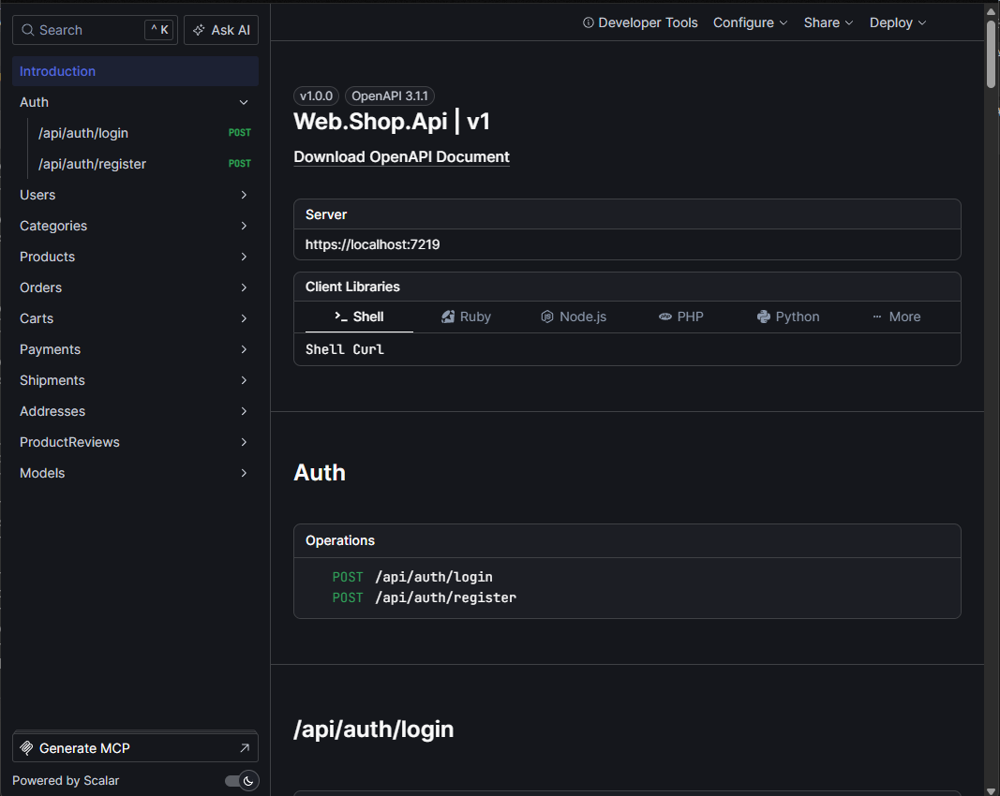
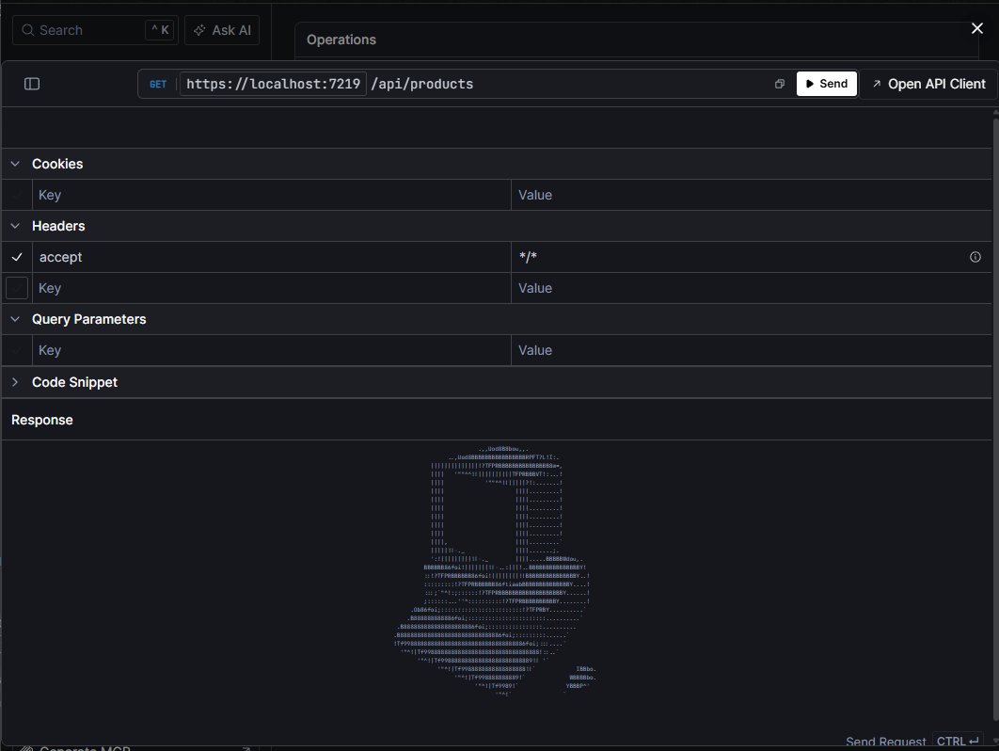

CQRS REST API
Een REST API gebouwd rond het CQRS-patroon (Command Query Responsibility Segregation), voor het eerst verkend tijdens mijn stage bij VandenBroele. Gebruikt Minimal APIs voor een lichtgewicht oppervlak, Sqids voor geobfusceerde publieke ID's en JWT voor beveiligde endpoints.
- Type
- REST API
- Aanleiding
- Verdieping na mijn stage
- Documentatie
- Scalar (OpenAPI 3.1)
Screenshots · klik om te vergroten



Wat ik heb gebouwd
Een overzichtelijke API volgens het CQRS-patroon — commands wijzigen de status, queries lezen die uit, en geen van beide paden deelt logica. Endpoints worden gedefinieerd met Minimal APIs om het oppervlak klein te houden. Sqids vervangen integer ID's in publieke URL's om enumeratie te voorkomen, en JWT beschermt beveiligde routes.
Technische stack
Wat ik heb geleerd
- CQRS toepassen om lezen en schrijven duidelijk te scheiden
- Minimal APIs gebruiken voor een lichte, expliciete routing-opzet
- Database-ID's obfusceren met Sqids
- Een project structureren voor schaalbaarheid zonder over-engineering